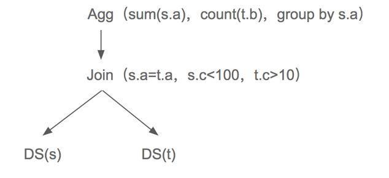

Cost-based Optimization
As stated in the planner overview, cost-based optimization (usually used interchangeably with physical optimization in TiDB code) is used to process the logical plan tree obtained from the logical optimization stage, it would do cost-based enumeration for the implementations of each logical operator, and find a combination of all operators with the lowest cost as the final physical plan. The physical plan represents the specific way the database finally executes the corresponding SQL statement. In addition, compared to logical optimization, physical optimization is highly dependent on statistics and cost models.
In this chapter, we will introduce how physical optimization transforms a logical plan into a physical plan. How does it use statistics and cost models to select the lowest cost plan. Given the space limit, we will not cover all the implementation details. But we will clearly show the necessary path and tell you how to understand the relevant content. Besides, it should be noted that we will not introduce related content generated by the MPP plan in this chapter.
The flow of cost-based optimization
The entry function of cost-based optimization is the physicalOptimize function in the planner/core/optimizer.go file. The introduction described in this chapter is also based on this function. The simplified code is as follows:
func physicalOptimize(logic LogicalPlan) (PhysicalPlan, float64) {
logic.recursiveDeriveStats() // Step1
preparePossibleProperties(logic) // Step2
property := &property.PhysicalProperty{
TaskTp: property.RootTaskType,
ExpectedCnt: math.MaxFloat64,
}
t := logic.findBestTask(property) // Step3
return t.plan(), t.cost()
}
The input of the physicalOptimize function is the logical plan tree obtained from the logical optimization stage, and the output is the physical plan tree with the least cost corresponding to the logical plan tree, and the cost corresponding to the plan. This function can be divided into three parts. We will briefly explain its effect first, and then make a detailed introduction.
logic.recursiveDeriveStats(): The operator at the bottom of the logical plan transfers statistics from the bottom to the top for subsequent cost calculations. We will introduce this part in detail in the laterDerive Statisticssection.preparePossibleProperties(logic): Property describes the physical properties of the operator, for example, the output of some operators is ordered according to certain columns. The function is only used for join and aggregation. It transfers property information from bottom to top, so that join and aggregation operator can get the possible properties. We will introduce this part in detail in the laterPrepare Propertiessection.logic.findBestTask(property): Do a top-down memory search for logical plan according to the required property to generate possible physical plans, and select the lowest cost plan from them. We will introduce this part in detail in the laterFind Best Tasksection.
Derive Statistics
The entry function of deriving statistics is the baseLogicalPlan.recursiveDeriveStats function. It is used to pass the statistics of logical plan from the bottom up. And within each operator, the statistics will be kept for subsequent cost calculations.
For each operator, the logic for deriving statistics is in DeriveStats(childStats []*property.StatsInfo, ...) (*property.StatsInfo, error) method of the LogicalPlan interface. Their specific implementation is in the planner/core/stats.go file.
The function calculates its own statistics based on the statistics of the child nodes. And each operator needs to save statistics to the property.StatsInfo structure, which the main variables include RowCount(the number of rows), ColNDVs(the NDV of each columns), and HistColl(the histogram, only the DataSource can keep this). You can read the contents of the Table Statistics chapter to get more information about statistics.
In addition, we need to pay more attention to the implementation of the DataSource.DeriveStats function. DataSource.DeriveStats shows where the plan's statistics originally came from. Other operators are some special implementations and you can read their implementation when you need it.
Prepare Properties
The entry function of preparing properties is the preparePossibleProperties(logic) function. it is used to generate possible physical properties of each operators from the bottom up. It reduces some properties related paths that do not need to be considered. In this way, the impossible paths can be cut as early as possible in the process of searching the physical plan, thereby speeding up the search.
For each operator, the logic for preparing properties is in PreparePossibleProperties(schema *expression.Schema, childrenProperties ...[][]*expression.Column) [][]*expression.Column method of the LogicalPlan interface. Their specific implementation is in the planner/core/property_cols_prune.go file.
The preparePossibleProperties function is only used for Join and Aggregation operators, because only these two operators have corresponding sorting physical implementations. The properties originally came from the DataSource operator, such as the corresponding primary key and index information in the DataSource operator. It will be passed from bottom to top, so that each operator in the plan gets its own properties. Besides, some operators with sorting effect can still generate properties for transmission, such as Sort operator, Window operator with order by, etc.
We will illustrate with examples:
select * from t join s on t.A = s.A and t.B = s.B
The property of the join operator can be {A, B}, {B, A}. If we have n equality conditions, then we have n! possible properties. But if we do the function preparePossibleProperties(logic) first, we can only use the properties of the t table and the s table themselves.
Find Best Task
The findBestTask(prop *property.PhysicalProperty) (task, error) method of LogicalPlan interface converts the logical operators to the physical operators. It is called recursively from the parent to the children to create the result physical plan. And the physical plan will be built from the bottom up.
The introduction described in this section is based on the baseLogicalPlan.findBestTask function in the planner/core/find_best_task.go file. The simplified code is as follows:
func (p *baseLogicalPlan) findBestTask(prop *property.PhysicalProperty) (bestTask task) {
bestTask = p.getTask(prop) // Step1
if bestTask != nil {
return bestTask
}
plansFitsProp = p.self.exhaustPhysicalPlans(prop) // Step2
bestTask = p.enumeratePhysicalPlans4Task(plansFitsProp, prop) // Step3
p.storeTask(prop, bestTask) // Step4
return bestTask
}
The input of the baseLogicalPlan.findBestTask function is the property.PhysicalProperty which requires the properties that the physical plan needs to meet. And the output is the task which encapsulates the physical plan. We will introduce this structure in detail later. This function can be divided into some parts. We will briefly explain its effect first, and then make a detailed introduction.
- The
getTaskandstoreTaskfunctions are used for memory search. ThegetTaskfunction is used to find the optimal physical plan from the hash table when the corresponding path has been calculated. And thestoreTaskfunction is used to store the best physical plan which meets the required properties. p.self.exhaustPhysicalPlans(prop): Generates all possible plans that can match the required property. We will introduce this part in detail in the laterExhaust Physical Planssection.p.enumeratePhysicalPlans4Task(plansFitsProp, prop): Select the lowest cost plan among all generated physical plans. We will introduce this part in detail in the laterEnumerate Physical Plans For Tasksection.
In addition to baseLogicalPlan.findBestTask, we also need to focus on DataSource.findBestTask. It is usually the end of the recursive call of the findBestTask interface function. It will enumerate all the available paths and choose a plan with least cost. However, due to space limitations, the implementation of findBestTask for other operators will not be introduced in more detail. You can read the code to learn more.
We will illustrate how the baseLogicalPlan.findBestTask work with the following example:
select sum(s.a),count(t.b) from s join t on s.a = t.a and s.c < 100 and t.c > 10 group by s.a; // Note: Assume that we have index(s.a) and index(t.b).
The logical plan corresponding to this SQL is as follows:

Then we will combine the following picture and code for a detailed introduction to explain how the baseLogicalPlan.findBestTask function work.
In the figure, the black font operator is a logical operator(e.g, Agg, Join and DS), the blue font is a physical operator(e.g, Stream Agg, Hash Join and Index Scan(a)...), and the yellow arrow is an operator for which the cost has been calculated. And the red dashed arrow is not in compliance with prop operator. The font on the arrow describes the property requirements for the lower operators(e.g, s.a means the the output of the lower operator needs to be ordered according to s.a).
Step1: ThegetTaskfunction corresponds to the yellow arrow in the figure, which means that the calculated part can be used directly without repeated calculations.Step2: Thep.self.exhaustPhysicalPlans(prop)function represents the process of logical operators generating physical operators. And it corresponds to the logical operator represented by the black font pointing to the physical operators represented by the blue font in the figure. For example, logical operatorAgggenerates physical operatorsStream AggandHash Agg. But some physical operators that do not satisfy the required property cannot be generated. For example, if the required property iss.alogical operatorDS, only physical operatorIndex Scan(a)can be generated, butTableScancannot be generated.Step3: After we generate all the possible physical plans, we should compare their costs and choose the lowest cost plan. For example, for the plan ofStream Agg -> Sort Merge Join -> Index Scan(a), its cost isCost(Stream Agg) + Cost(Sort Merge Join) + Cost(Index Scan(a)).

Exhaust Physical Plans
For each operator, the logic for exhausting physical plans are in exhaustPhysicalPlans(*property.PhysicalProperty) (physicalPlans []PhysicalPlan) method of the LogicalPlan interface. Their specific implementation is in the planner/core/exhaust_physical_plans.go file.
exhaustPhysicalPlans generates all possible plans that can match the required property. Different operators have different implementations. You can learn more about how different logical operators generate corresponding physical operators based on the required property by reading the code.
Enumerate Physical Plans For Task
Enumerate Physical Plans For Task will use the dynamic programming algorithm to select the lowest cost plan among all generated physical plans and it will return the task which encapsulates the selected physical plan. The task is a new version of physical plan. It stores cost information for a physical plan. You can see the interface definition of task in the planner/core/task.go file. A task may be copTask, rootTask, or a mppTask. copTask is a task that runs in a distributed kv store. rootTask is the task that runs in the TiDB compute layer. mppTask is a task that related to the mpp plan.
The introduction described in this section is based on the baseLogicalPlan.enumeratePhysicalPlans4Task function in the planner/core/find_best_task.go file. The simplified code is as follows:
func (p *baseLogicalPlan) enumeratePhysicalPlans4Task(physicalPlans []PhysicalPlan) task {
bestTask = invalidTask
for _, pp := range physicalPlans {
for j, child := range p.children {
childReqProps = pp.GetChildReqProps(j)
// Get the best child tasks that can match the required property.
childTasks[j] = child.findBestTask(childReqProps) // Step1
}
// Combine the best child tasks with parent physical plan.
curTask = pp.attach2Task(childTasks...) // Step2
// Get the most efficient one.
if curTask.cost() < bestTask.cost() { // Step3
bestTask = curTask
}
}
return bestTask
}
The input of theenumeratePhysicalPlans4Task function is []PhysicalPlan, which represents all physical plans corresponding to logical plan p that meet the property requirements. And the output is the task which encapsulates the physical plan. This function can be divided into some parts.
-
For each physical plan, get the required property for their children first. And recursively call
findBestTaskto find the best child task that satisfies the required property. -
After we find the best children tasks, we should use the
pp.attach2Taskto combine them with the current physical operatorpp. Theattach2Task(...task) taskis the method ofPhysicalPlaninterface. It makes the current physical plan as the father of task's physical plan and updates the cost of current task. For each operator, you can see their special implementations in theplanner/core/task.gofile.In addition, the cost of one implementation is calculated as a sum of its resource consumptions including CPU, Memory, Network, IO, etc. For each kind of resource specifically, the consumption is measured based on a unit factor (e.g,
scanFactoris the unit factor for IO consumption, which means the cost of scanning 1 byte data onTiKVorTiFlash), and the estimated number of rows / bytes to be processed by this operator. Note that, these unit factors can be customized by setting system variables liketidb_opt_xxx_factorto fit clusters of different hardware configurations in thesessionctx/variable/session.gofile. -
Compare the current task to the best task and choose the most efficient one.
Summary
This chapter specifically introduces the Volcano Optimizer currently used by TiDB. We describe in detail how cost-based optimization selects a physical plan with the least cost based on statistics and cost models.
But we still have some problems that the current framework can not handle. For example:
- The operator push-down logic is too simple. Only one operator is allowed except
Selection, and it is difficult to deal with new push-down operators added in the future (such asProjection, etc.). - Poor scalability: it is difficult to expand to support other storage engines, and implement corresponding push-down operators, such as
TiFlash. - For optimization rules that may not always get better, we currently do not support the selection of rules through cost. The search space of the optimizer is restricted.
- ...
We want to solve these problems, so we are planning to develop a new optimizer framework the Cascades Planner. But it still works in progress. You can learn more by reading planner/cascades, planner/memo and planner/implementation under the planner module.